Por lillolillolilloPor Negley Stockman
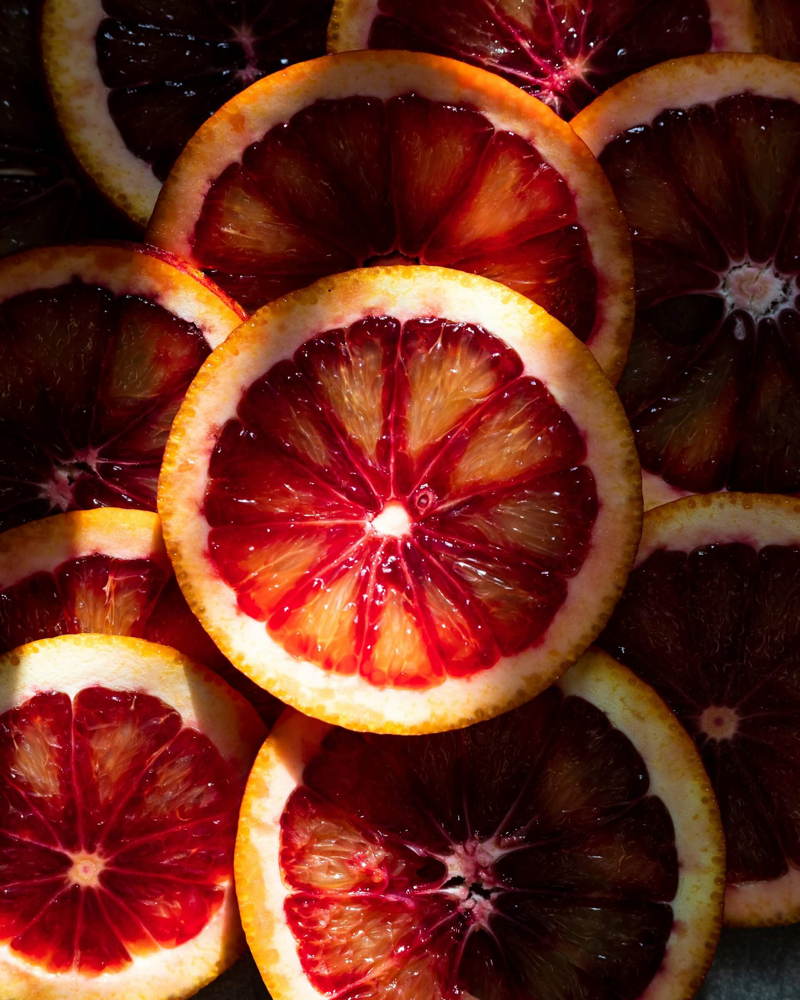
Por Uliana KopanytsiaPor Tho-Ge
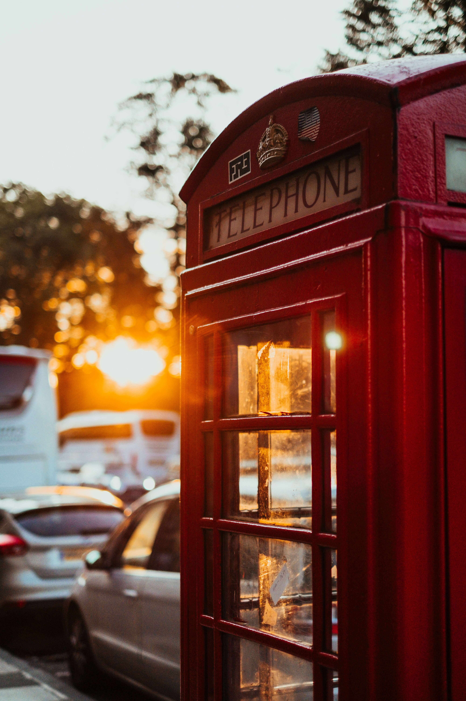
Por Adam Wilson
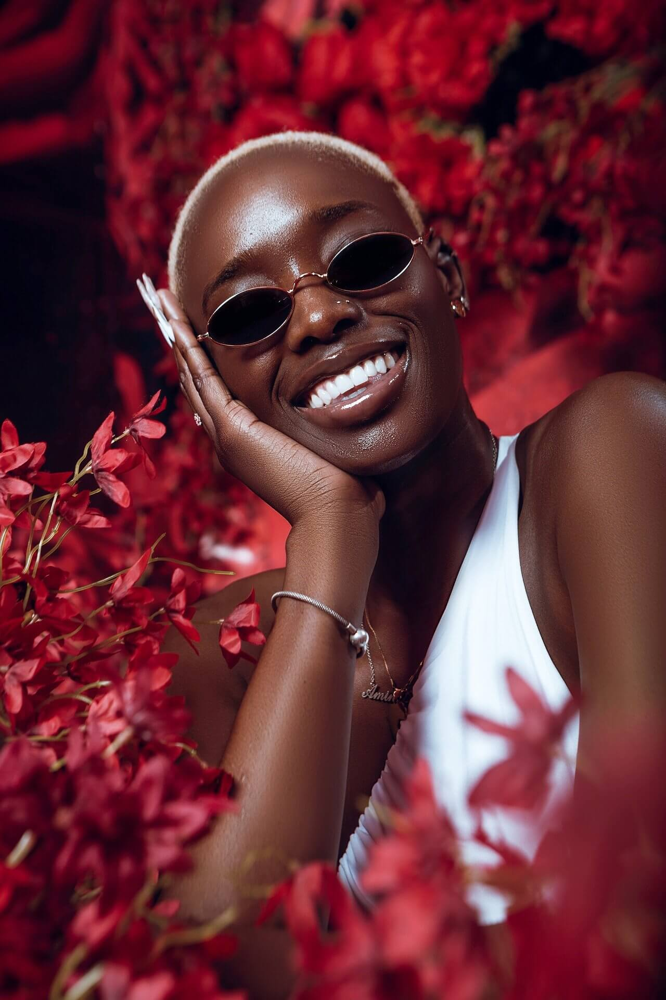
Por Krazikofi
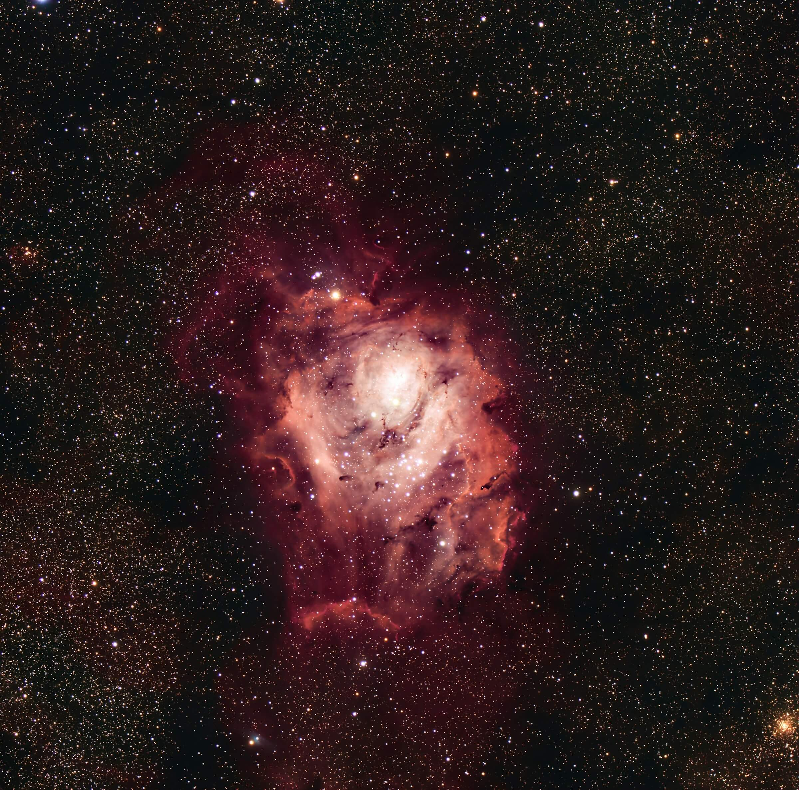
Por Scott Lord
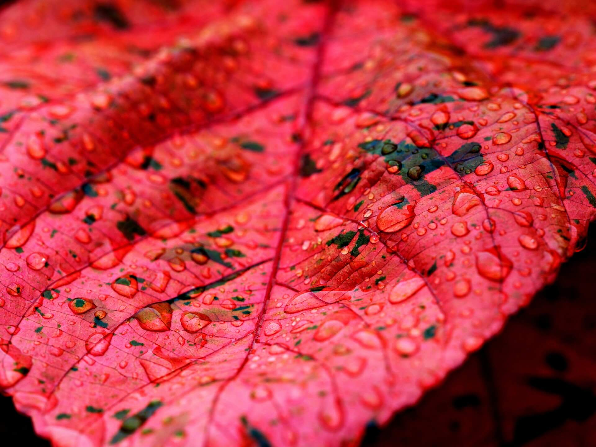
Por ignartonosbg
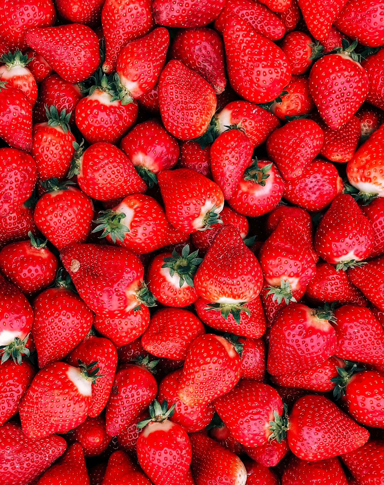
Por Sviatoslav Huzii
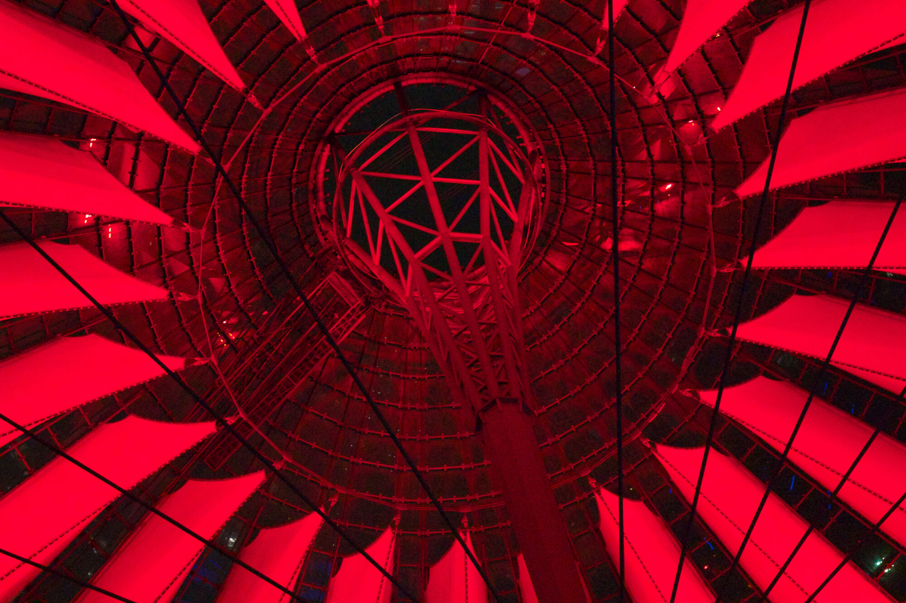
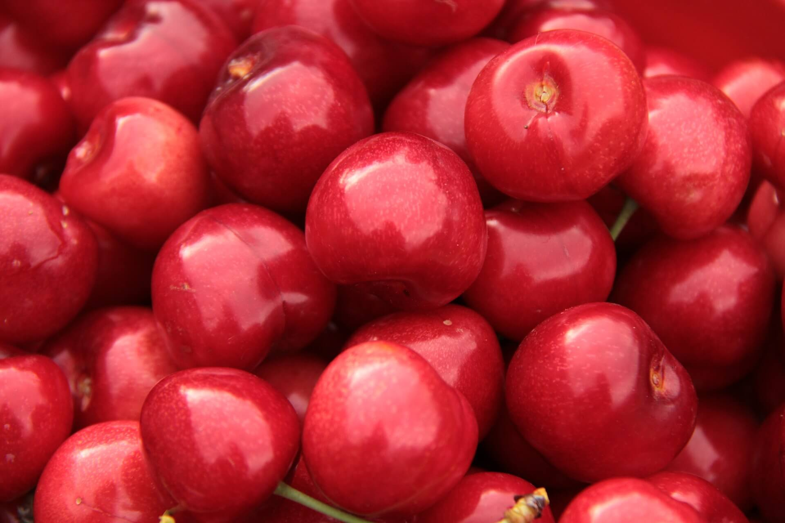
Por kamerman1960
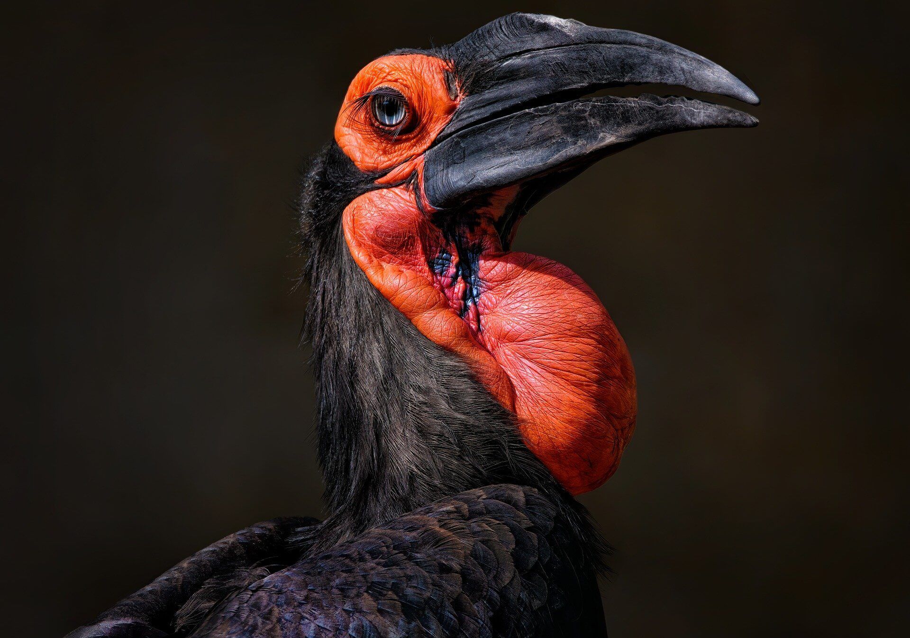
Por ambquinn
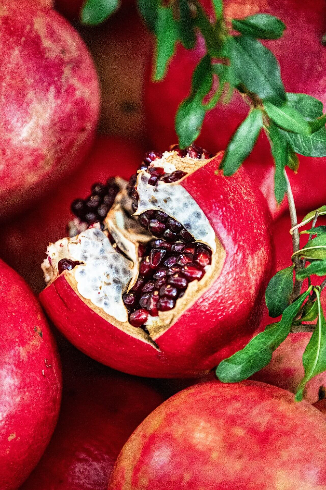
Por SwidaAlbaPor Christopher Burns
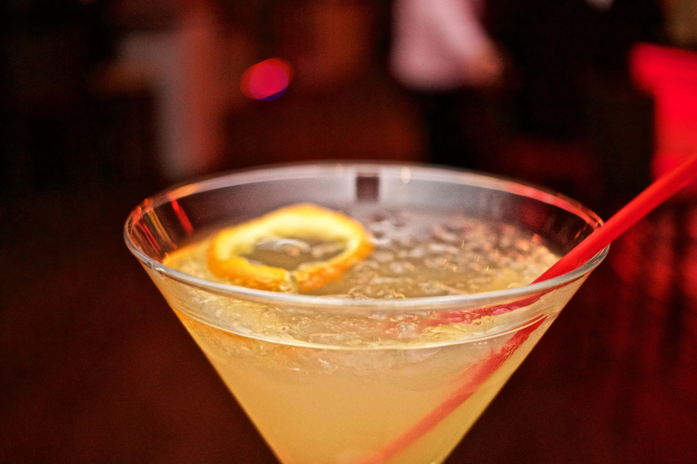
Com uma conta grátis você tem acesso a downloads ilimitados!
 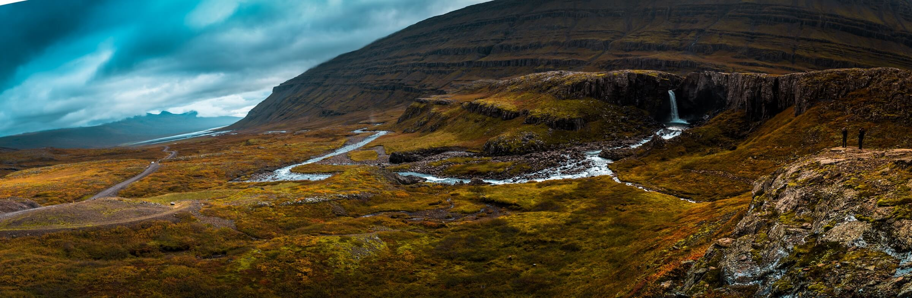
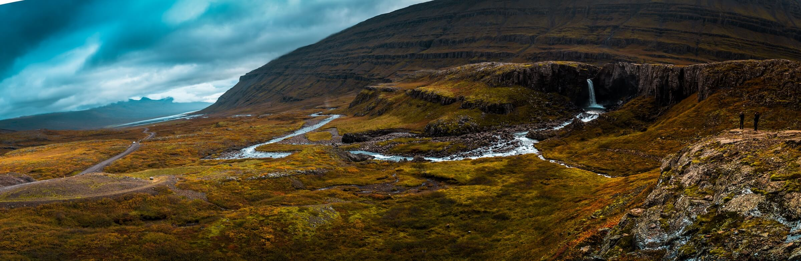